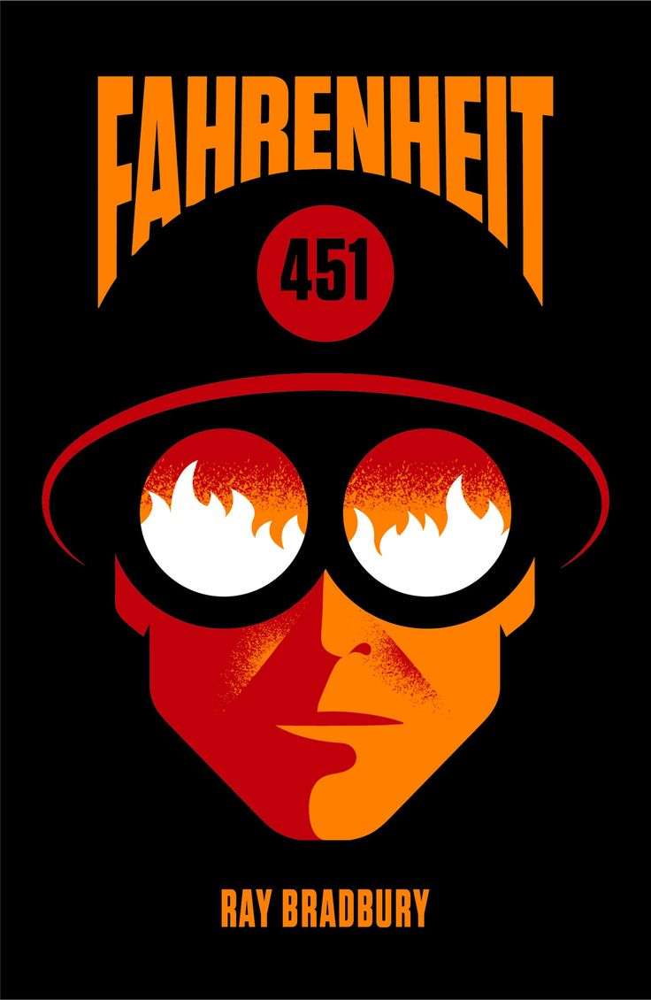

Detroit Becomes Human
Creator: Quantic Dream
Plot Summary: Detroit 2038. Technology has evolved to a point where human-like androids are everywhere.
They speak, move, and behave like humans but serve humanity. Play three distinct androids and see a world on the brink of chaos.
Relevance: Explores ethical questions around artificial intelligence and its role in society.
User Reviews:
"A fascinating exploration of what it means to be human in a world dominated by technology." – Alex
"The story is gripping and raises important questions about AI ethics." – Jamie

Frankenstein
Author: Mary Shelley
Plot Summary: A scientist's quest to create life leads to tragedy.
It explores human ambition, morality, and alienation in the pursuit of knowledge.
Relevance: Reflects on the responsibilities of creators and ethical implications of their work.
User Reviews:
"Still relevant today – raises questions about the limits of science." – Taylor
"A timeless classic that explores the human condition." – Morgan
Neuromancer
Author: William Gibson
Plot Summary: A cyberpunk classic that delves into a dystopian world of artificial intelligence and cyberspace.
Set in a gritty future, it questions the balance between technology and humanity.
Relevance: A foundational work in the cyberpunk genre, it shaped ideas of virtual reality and AI.
User Reviews:
"The origin of cyberpunk – a must-read for tech enthusiasts." – Riley
"A dense but rewarding exploration of AI and digital culture." – Sam

The Handmaid's Tale
Author: Margaret Atwood
Plot Summary: In a totalitarian society, women are stripped of their rights, and the story follows Offred, a Handmaid forced into servitude.
It delves into themes of oppression, resistance, and the power of narrative.
Relevance: A chilling warning about the erosion of rights and freedoms.
User Reviews:
"Powerful and unsettling – feels eerily relevant today." – Avery
"A haunting reminder of the importance of vigilance and resistance." – Jordan
The Hunger Games
Author: Suzanne Collins
Plot Summary: In a dystopian future, Katniss Everdeen must navigate survival in a deadly televised competition.
The story explores themes of power, resistance, and survival under an oppressive regime.
Relevance: A sharp critique of media, class divisions, and authoritarianism.
User Reviews:
"A gripping tale of rebellion and survival." – Casey
"The social commentary feels incredibly prescient." – Drew

Brave New World
Author: Aldous Huxley
Plot Summary: A world of engineered conformity and pleasure challenges the boundaries of individuality and freedom.
It critiques the dangers of technological and social control.
Relevance: Examines the consequences of sacrificing individuality for stability.
User Reviews:
"A cautionary tale that's still incredibly thought-provoking." – Quinn
"Explores themes of freedom and control in an unforgettable way." – Blair

1984
Author: George Orwell
Plot Summary: A chilling depiction of a totalitarian regime where Big Brother watches everything and individuality is erased.
The novel warns against the dangers of authoritarianism and mass surveillance.
Relevance: A perennial reminder of the fragility of freedom and privacy.
User Reviews:
"Feels like a prophetic warning – a true masterpiece." – Taylor
"Orwell's vision of the future is as relevant as ever." – Blake

Fahrenheit 451
Author: Ray Bradbury
Plot Summary: In a future where books are outlawed, a fireman begins to question the oppressive society he serves.
It explores censorship, ignorance, and the transformative power of literature.
Relevance: A passionate defense of free thought and expression.
User Reviews:
"A powerful warning against the dangers of censorship." – Jordan
"Bradbury's love for books shines through – a must-read." – Alex
Ready Player One
Author: Ernest Cline
Plot Summary: A young man competes in a virtual reality treasure hunt set in a dystopian future.
Set in a world where the virtual realm is a refuge for humanity.
Relevance: Explores virtual reality and escapism in a digitized world.
User Reviews:
"A love letter to geek culture with important underlying messages." – Casey
"The perfect blend of nostalgia and dystopian themes." – Drew